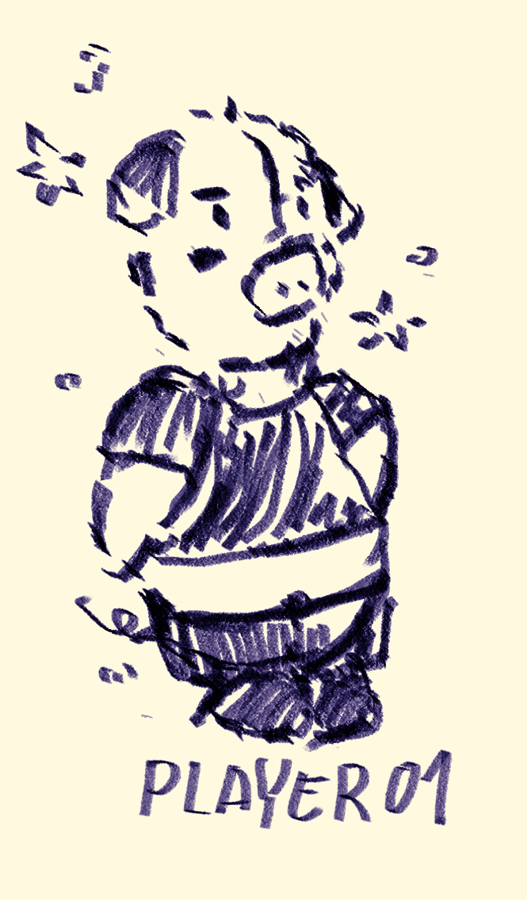
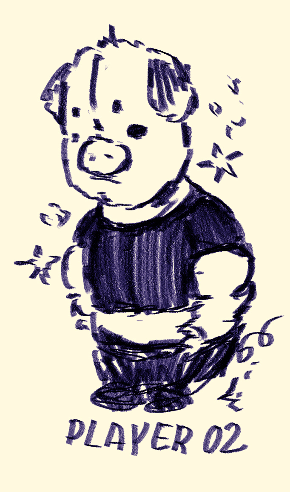
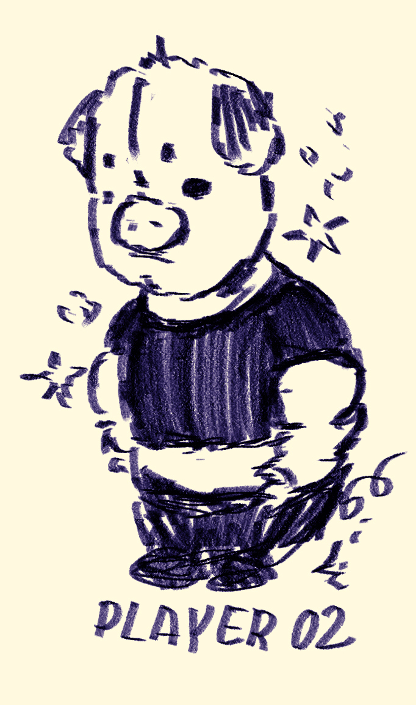
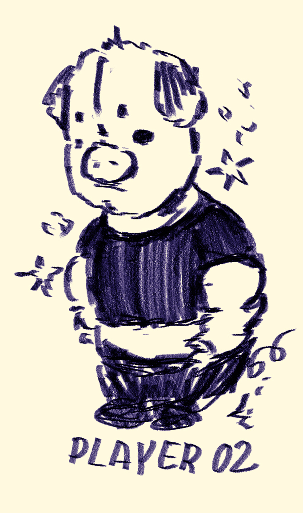
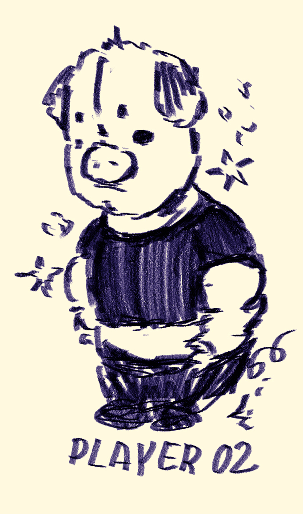

 


scoreboard
play against a friend to see who is the cooler pig! click to roll the dice. the numbers you roll will contribute to your total score. the first player to get to 30 wins!
easy, right? not really... every time you roll a 1 the turn goes to the next player. and if you roll two ones? that's called snake eyes your score resets!

scoreboard